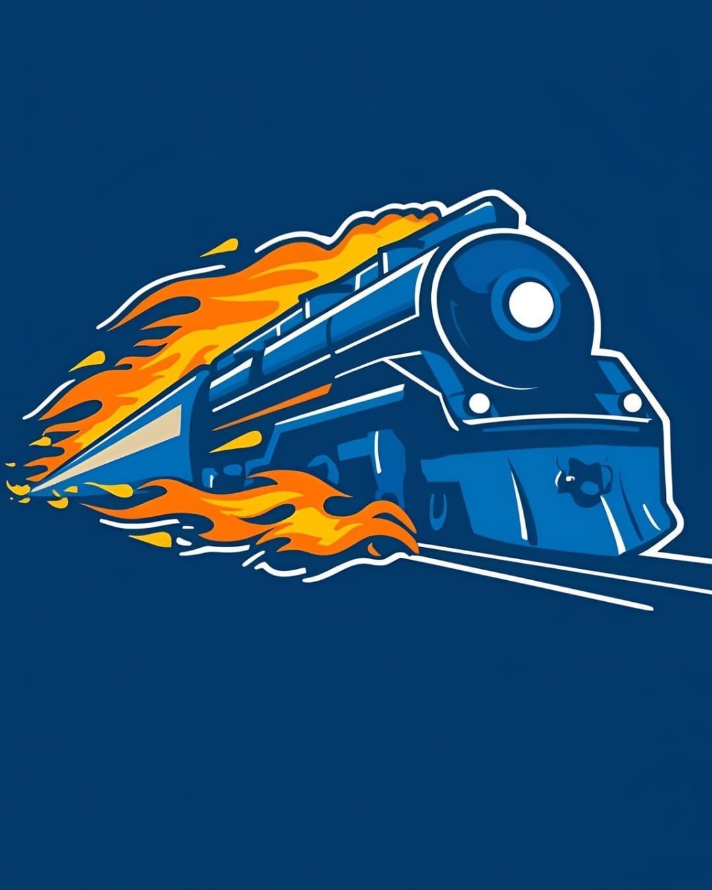
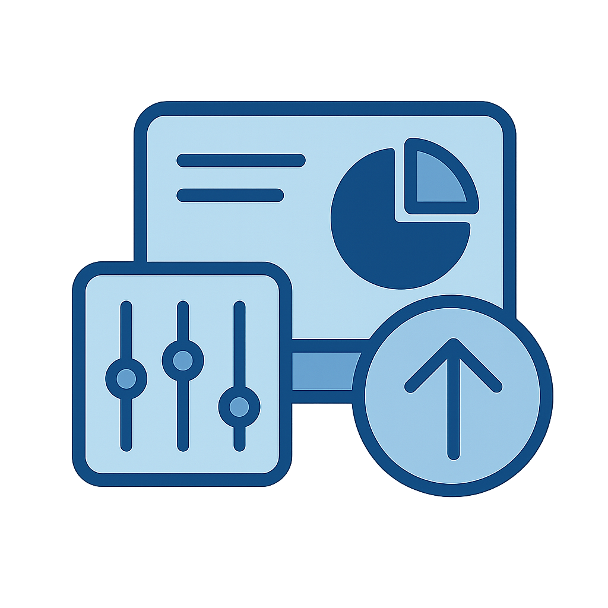
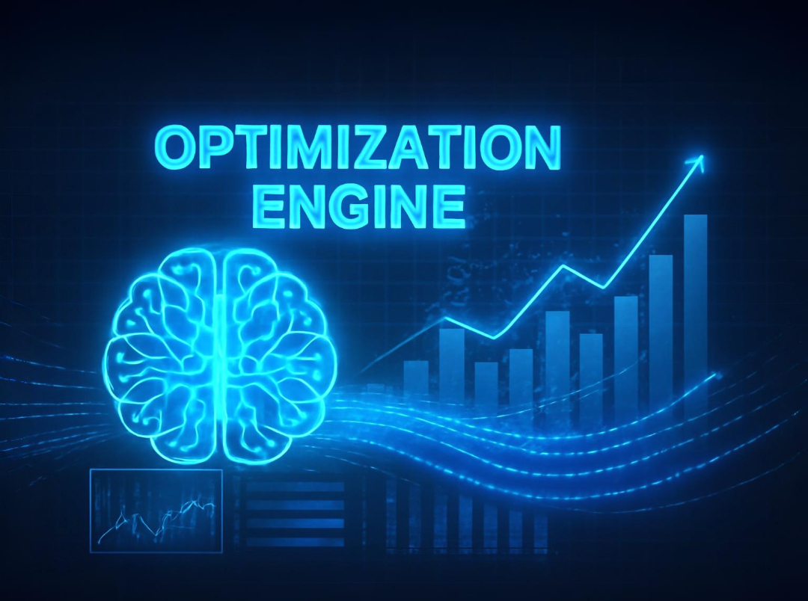

Sign InAI-Powered Railway Traffic Control
AI-powered scheduling with MILP and RL algorithms.

Controller-friendly interface with recommendations.
What-if analysis and scenario testing.

RailBlaze connects via secure APIs with TMS, signaling systems, and scheduling databases.
Multi-layer safety validation with fail-safe mechanisms and human oversight capabilities.
Yes, dynamic re-optimization algorithms adapt schedules within seconds of disruption detection.
Comprehensive training program with simulation-based learning and gradual system adoption.
Experience the future of railway traffic control. Schedule a demo to see how RailBlaze can transform your operations.